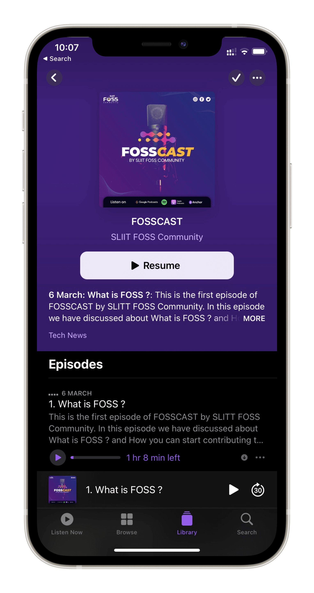

<section>
  <div class="container-fluid bg-secondary auto-space auto-space-vertical">
    <div class="row align-items-center">
      <div
        class="col-sm-12 col-md-6 col-lg-4 text-center text-md-left text-lg-left"
      >
        <span data-tilt>
          
        </span>
      </div>

      <div
        class="col-sm-12 col-md-6 col-lg-8 text-center text-md-left text-lg-left"
      >
        <h2 class="title">SLIIT FOSS</h2>
        <h1 class="title">PODCAST</h1>
        <br />
        <p class="lead">
          Whether you’re itching to get out of lockdown, searching for your next
          job or struggling to find motivation at your current one - a reminder
          that SLIIT FOSSCAST is launching the first ever podcast episode
          speaking with a VERY influential FOSS enthusiast in Tech!
        </p>
        <p><a class="btn mt-4 mb-5 mb-md-0" href="#">Listening Now</a></p>

        <p class="mt-5">
          
          
          
          
        </p>
      </div>
    </div>
  </div>
</section>
